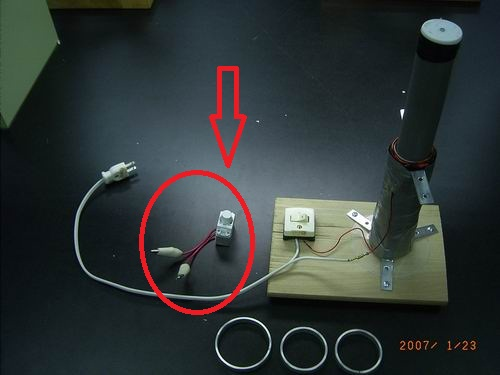
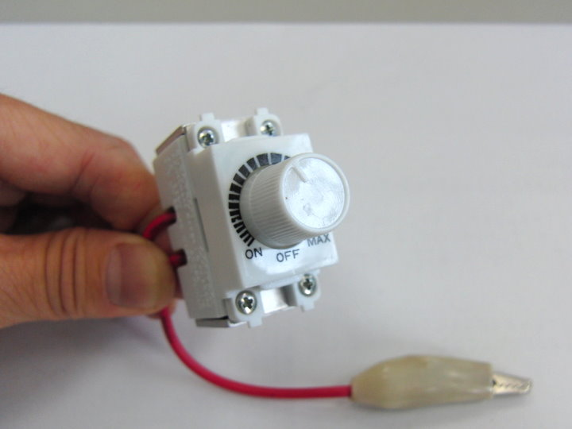
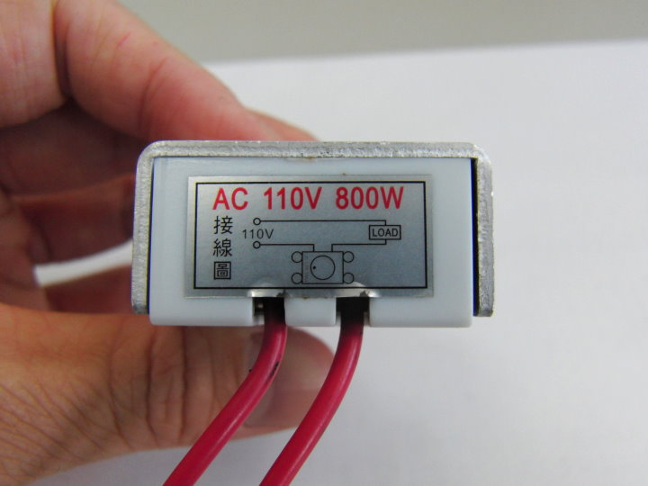
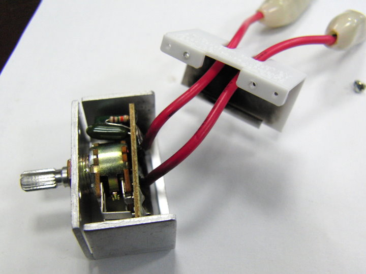
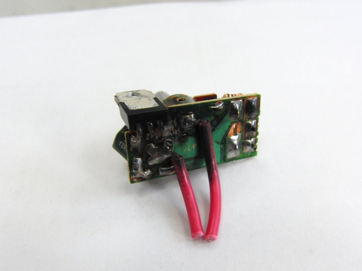
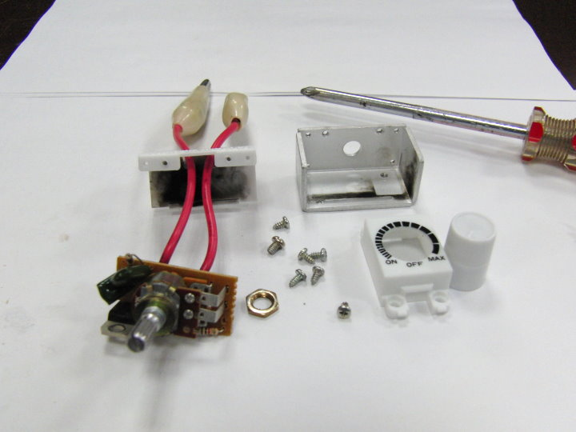
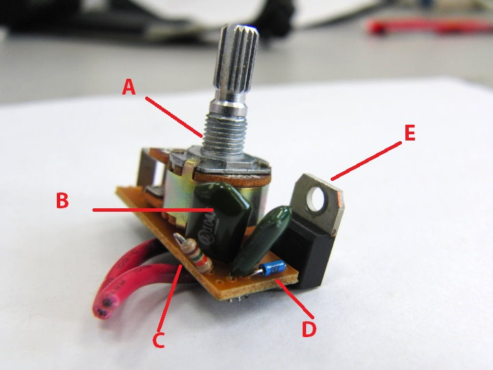
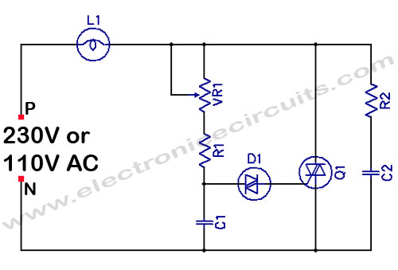

↑主角是它，出現在 小寶 實驗裡的調光器。
原本是用來調一般燈泡亮度用的，被我拿來減少小寶實驗的電流，
很多同學都以為它是一個可變電阻，實際上不是。(註)

↑好巧不巧，有一次不小心轉到MAX，結果電流太大，就燒壞了。

↑底部的標示寫 800W，可見小寶的功率超過800W。實際量了一下，示範鋁環跳起來時，
電流是 20A，乘上電壓 110V，功率有2200W，難怪會燒壞。

↑拆開，白色塑膠殼內部燒得一片漆黑。

↑超慘的，被燒壞的主要零件是那個三隻腳的電晶體。

↑全部 屍體 零件的大合照。

↑介紹一下我認得的東西：A可變電阻，B電容，C電阻，
D、E 不認識的電晶體。

↑網路上查到的電路圖，D1、Q1就是D與E，名字是〝雙向可控矽〞。
註：為何調光器不只是一個可變電阻，因為調光器的功能是讓串連的燈泡亮度改變，
範圍是全亮到全暗，當半暗時，表示燈泡電阻與可變電阻相當，功率也相當，可變電阻會非常燙，
可見只用可變電阻不是一個恰當的設計。